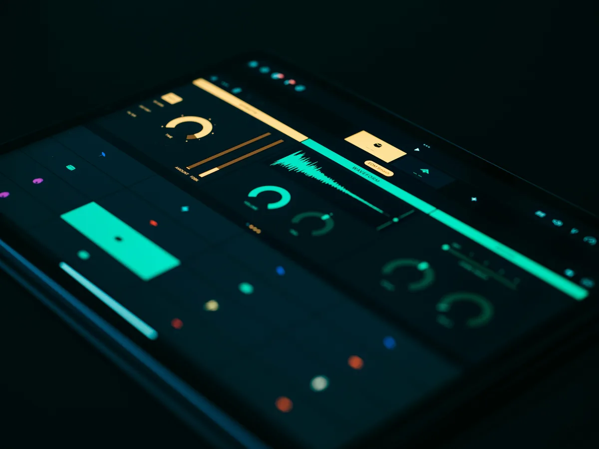
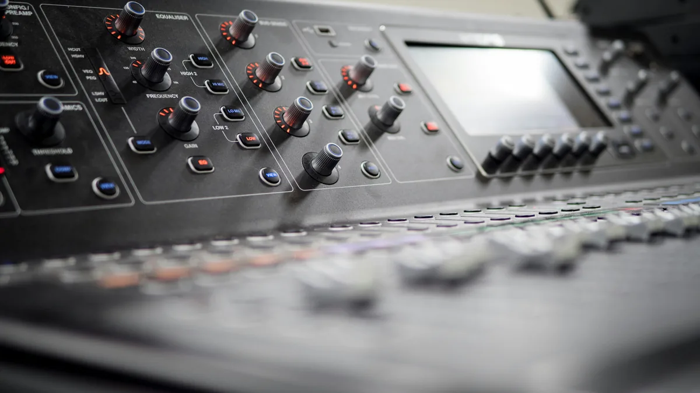
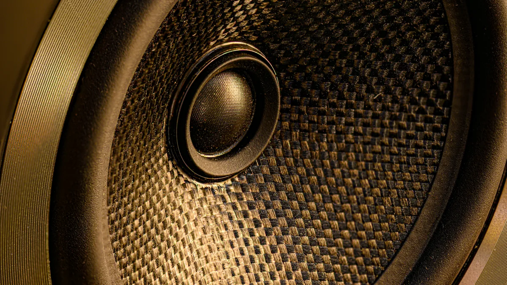

Każdy, kto słyszał elektroniczną muzyką taneczną, zna ten efekt - bas "pompuje" rytmicznie w takt kick druma, całość oddycha i pulsuje. To sidechain compression w najbardziej oczywistej formie. Ale sidechain to nie tylko modny efekt z muzyki klubowej - to jedno z fundamentalnych narzędzi kontroli dynamiki, bez którego trudno zbudować przejrzysty, profesjonalny miks. Razem z automatyzacją głośności tworzy parę technik, które decydują o tym, czy elementy miksu ze sobą kolidują, czy wzajemnie sobie ustępują.
Czym jest sidechain i jak działa
Sidechain (ścieżka boczna) to sygnał sterujący, który wpływa na zachowanie procesora dynamiki - kompresora, bramki szumów, limitera - bez samodzielnego trafiania do wyjścia. Kompresor słyszy ten sygnał i reaguje na jego poziom głośności, ale przetwarza zupełnie inne źródło dźwięku.
Standardowy kompresor reaguje na sygnał, który sam przetwarza - gdy wejście jest głośne, kompresja wchodzi, gdy ciche, odpuszcza. W trybie sidechain rozbijasz te dwie funkcje: jedno źródło wyzwala kompresję, drugie jest kompresowane. Kick drum wyzwala kompresor, który ścisza bas - kick i bas przestają ze sobą walczyć w paśmie.
W DAW-ach realizuje się to przez routing pomocniczy. W Ableton Live to "Audio From" w ścieżce efektu, w Logic Pro X - zakładka "Side Chain" w oknie kompresora, w FL Studio - kanał Sidechain w ustawieniach miksera. Mechanizm jest identyczny wszędzie, różni się tylko interfejs.
Ducking i pumping - dwa różne efekty, jedna technika
Sidechain compression daje dwa wyraźnie różne rezultaty w zależności od tego, jak agresywnie i z jakimi czasami ataku i release go ustawisz.

Ducking to subtelna wersja - używana w radio i podcastach od dekad. Muzyka w tle ścisza się automatycznie, gdy lektor mówi, i wraca do normalnego poziomu, gdy kończy. W produkcji muzycznej ducking sprawdza się wszędzie tam, gdzie chcesz zrobić miejsce dla ważniejszego elementu. Wokal ścisza gitarę rytmiczną o 2-3 dB w momentach śpiewania. Przełom akordu fortepianu przycisza pad syntezatora. Efekty są ledwo słyszalne, ale miks brzmi czytelniej.
Pumping to agresywna wersja, w której sam efekt wchodzi w grę jako element muzyczny. Ustawiasz krótki attack (1-5 ms), średni release (50-200 ms zsynchronizowany z tempem utworu) i wysoki ratio (8:1 lub więcej). Kick drum wyzwala kompresję na padach lub basie, które rytmicznie "pompują" w takt. To nie błąd - to technika celowa, szczególnie w muzyce elektronicznej, techno i EDM.
Granica między duckingiem a pumpingiem leży w czasie release i intensywności kompresji. Krótszy release = bardziej agresywne pompowanie. Dłuższy = bardziej naturalny, niezauważalny efekt.
Sidechain w praktyce - konkretne zastosowania
Teoria jest prosta, ale sens sidechainu wychodzi dopiero przy konkretnych zastosowaniach. Poniżej najczęstsze i najbardziej skuteczne konfiguracje.
Kick i bas
Kick drum i bas gitarowy lub syntetyczny zajmują to samo pasmo częstotliwości - 60-120 Hz. Jeśli obydwa mają pełną głośność jednocześnie, sumują się i zamazują. Tradycyjne rozwiązanie to EQ - ciąć bas tam, gdzie kick ma energię. Ale sidechain daje coś lepszego: bas automatycznie ustępuje dokładnie wtedy, gdy uderza kick, i wraca do pełnej głośności między uderzeniami. Miks oddycha.
Ustawienie: kompresor na ścieżce basu, sidechain z kick druma. Attack 5-15 ms (żeby attack basu nie znikał natychmiast), release 80-150 ms zsynchronizowany z tempem. Ratio 4:1 do 8:1. Threshold ustaw tak, żeby redukcja wynosiła 3-6 dB - nie więcej, jeśli chcesz naturalny efekt.
Wokal i instrumenty tła
Klasyczny ducking w piosenkach. Gitara rytmiczna, pad czy syntezator tła wyzwalane sidechainem z wokalu ściszają się o 2-4 dB, gdy wokal aktywnie śpiewa. Efekt jest niezauważalny dla słuchacza, ale wokal przebija się wyraźniej bez konieczności podnoszenia jego głośności ani agresywnego EQ.
Kluczowe: użyj długiego attack (20-50 ms) i długiego release (300-500 ms). Zbyt szybkie czasy sprawią, że instrumenty będą "migać" przy każdej sylabie.
Reverb i delay na wokalu
Ogony reverbów i delayów mogą zamazywać wokal, szczególnie przy szybkim tempie lub gęstej instrumentacji. Sidechain kompresji na kanale powrotu reverbowego (nie na samym wokalu) sprawia, że pogłos ścisza się, gdy wokal śpiewa, i "otwiera się" pełną głośnością w pauzach i pomiędzy frazami. Wokal brzmi sucho i wyraźnie, a przestrzeń pojawia się tam, gdzie nie ma śpiewu.
Sidechainy z filtrem pasmowym
Zaawansowana technika: zanim sygnał kick druma trafi do wejścia sidechain kompresora, przepuść go przez filtr EQ i wybierz tylko pasmo 60-100 Hz. Kompresor reaguje tylko na niskie częstotliwości uderzenia, nie na atak blaszki. Efekt jest subtelniejszy i bardziej muzyczny niż reagowanie na pełny sygnał perkusji.
Część DAW-ów ma wbudowany filtr sidechain w oknie kompresora (np. FabFilter Pro-C 2). Jeśli nie ma - wyślij kick na dodatkowy kanał aux, zastosuj na nim EQ z wyizolowanym basem i ten kanał użyj jako sidechain.
Automatyzacja głośności - manualna kontrola dynamiki
Sidechain to dynamika reagująca automatycznie w czasie rzeczywistym. Automatyzacja głośności to ręczna kontrola - rysujesz krzywe poziomu w osi czasu, które DAW odtwarza podczas playbacku. Obie techniki rozwiązują ten sam problem z różnych stron i świetnie się uzupełniają.

Automatyzacja przydaje się wszędzie tam, gdzie sidechain jest zbyt "mechaniczny" albo gdzie zmiana ma być jednorazowa, a nie rytmiczna. Wokal za głośny tylko w refrenach - zamiast kompresować cały utwór, opuść ścieżkę o 1.5 dB w sekcji chorus. Gitara solo za cicha w połowie piosenki - podbij o 2 dB w tych taktach. Most artykułu wymaga innej głośności niż zwrotka - narysuj przejście.
Volume automation kontra clip gain
DAW-y oferują dwie różne warstwy regulacji głośności, które łatwo ze sobą mylić.
Clip gain (lub "pre-fader gain") działa przed wejściem do kanału miksera - zmienia głośność samego klipu audio, zanim sygnał trafi do jakiegokolwiek procesora. To poziom, który ustawiasz jeszcze przed EQ i kompresorem.
Volume automation (automation na faderze lub ścieżce głośności) działa po procesorach - po EQ, po kompresorze. Zmiana głośności faderów nie wpływa na to, jak kompresor przetwarza sygnał.
Praktyczna implikacja: jeśli chcesz wyrównać głośność materiału źródłowego zanim kompresor go "usłyszy" - użyj clip gain. Jeśli chcesz zmienić finalną głośność w miksie po całym łańcuchu procesorów - użyj automatyzacji fadera.
Automation dla naturalności
Najczęstszy błąd przy automatyzacji to rysowanie zbyt ostrych przejść - pionowe ściany na krzywej głośności, które brzmią mechanicznie. Ludzkie ucho słyszy nagłe skoki głośności jako artefakty, nawet jeśli zmiana jest mała.
Zasada: zawsze rysuj łagodne przejście o długości 200-500 ms przed i po zmianie głośności. W praktyce to kilka taktów w spokojnym tempie. Głośność powinna "wchodzić" i "wychodzić", nie skakać.
W Ableton Live używaj krzywych (ctrl+klik na linii automation). W Logic Pro X - włącz "Smooth" dla krzywej. W Pro Tools - skorzystaj z trybu "Trim" przy nagrywaniu automation. Każdy DAW ma narzędzia do łagodzenia przejść - używaj ich zawsze.
Kiedy sidechain, kiedy automation
Obie techniki kontrolują głośność, ale każda ma swoje naturalne zastosowanie. Nie trzeba wybierać - profesjonalne miksy używają ich jednocześnie.
Sidechain sprawdza się przy rytmicznych, powtarzalnych zdarzeniach zsynchronizowanych z groove'em - kick i bas, wokal i tło. Reaguje w czasie rzeczywistym i dopasowuje się do każdej zmiany w materiale. Nie musisz nic rysować - kompresor robi to za ciebie.
Automatyzacja sprawdza się przy zmianach jednorazowych, charakterystycznych dla struktury piosenki - ciszej w wersie, głośniej w refrenie, solo w moście. To decyzje artystyczne zapisane w projekcie, które powtarzają się przy każdym odtworzeniu dokładnie tak samo.
Typowy workflow: najpierw sidechain na kick/bas i wokal/tło - rozwiązujesz problemy dynamiczne, które pojawiają się przez cały utwór. Potem automatyzacja - korygujsz to, co sidechain zrobił zbyt mechanicznie, i dodajesz artystyczne zmiany głośności zgodne z układem piosenki.
Najczęstsze błędy przy sidechainie
Sidechain jest prosty w koncepcji, ale łatwo go źle ustawić. Poniższe błędy pojawiają się regularnie - nawet u doświadczonych producentów na początku pracy z techniką.

Za krótki release. Release krótszy niż długość nuty basu lub dłuższy instrument tła powoduje, że kompresor "pompuje" nieintencjonalnie - słyszysz mechaniczne pulsowanie. Synchronizuj release z tempem: przy 120 BPM ćwierćnuta to 500 ms, ósemka to 250 ms.
Za wysoki ratio bez umiaru. Ratio 20:1 na sidechainie basu brzmi dramatycznie przy pierwszym odsłuchu, ale po kilku godzinach pracy staje się męczące. Zacznij od 4:1, podbijaj tylko jeśli naprawdę tego wymaga gatunek.
Brak monitorowania redukcji. Zawsze obserwuj wskaźnik gain reduction kompresora. Jeśli igła nie rusza się wcale - threshold jest za wysoki i kompresor nic nie robi. Jeśli tańczy przez cały czas - threshold jest za niski i kompresja jest permanentna zamiast reaktywna.
Sidechain jako zamiennik EQ. Sidechain nie zastępuje EQ - uzupełnia go. Jeśli kick i bas walczą ze sobą pasmowo, najpierw rozdziel je przez EQ (cut basu w okolicach 60-80 Hz tam, gdzie kick ma fundamentalną), a dopiero potem dodaj sidechain jako dynamiczne uzupełnienie. Sam sidechain bez EQ często nie wystarczy.
Najczęstsze pytania (FAQ)
Czy sidechain compression niszczy brzmienie basu?
Nie, jeśli jest ustawiony prawidłowo. Redukcja głośności 3-6 dB przez kilkadziesiąt milisekund jest niezauważalna dla ucha jako "ściszenie" - słyszysz tylko to, że bas i kick przestają ze sobą walczyć. Problem pojawia się przy zbyt krótkim release lub zbyt wysokim ratio - wtedy bas faktycznie brzmi mechanicznie i sztucznie. Zacznij od ratio 4:1 i release 100-150 ms, a potem dostosowuj do gatunku.
Czy mogę zrobić sidechain bez dedykowanego kompresora z wejściem sidechain?
Tak. Jeśli twój DAW pozwala na routing pomocniczy (a większość pozwala), możesz użyć dowolnego kompresora z wejściem sidechain - i większość kompresora wtyczkowych (VST/AU) takie wejście ma. W Ableton Live jest to sekcja "Audio From" w urządzeniu, w Logic Pro X - menu "Side Chain" w oknie kompresora, w FL Studio - kanał Sidechain w routingu miksera. Możesz też uzyskać efekt duckingu przez volume automation narysowaną ręcznie, jeśli rhythm jest regularny.
Jaka różnica między sidechainem na kanale basu a sidechainem na szynie grupowej perkusji?
Sidechain na pojedynczym kanale basu ścisza tylko bas - kick przebija się przez pełny, niezmieniony mix wszystkiego innego. Sidechain na szynie grupowej (np. cały "dół" miksu: bas + subbas) ścisza całe pasmo niskie jednocześnie, co daje efekt bardziej dramatyczny i spójny, ale ryzykowniejszy - łatwiej przesadzić. Zacznij od sidechainu na samym basie, a szynę grupową stosuj świadomie jako efekt artystyczny, nie domyślny.
Czy automatyzacja głośności zastępuje kompresję?
Nie - to dwa różne narzędzia. Kompresja reaguje dynamicznie na poziom sygnału w czasie rzeczywistym i wygładza szczytowe wartości. Automatyzacja głośności to ręcznie zaprojektowane zmiany poziomu powiązane z osią czasu i strukturą utworu, nie z dynamiką materiału. W praktyce używa się obu: kompresja wyrównuje dynamikę w obrębie frazy, automatyzacja koryguje głośność między sekcjami piosenki (zwrotka, refren, most). Zastąpienie jednego drugim zwykle daje gorszy efekt.
Jak zsynchronizować release sidechainu z tempem utworu?
Przelicz czas trwania nuty na milisekundy ze wzoru: 60000 / BPM = czas ćwierćnuty w ms. Dla 120 BPM ćwierćnuta to 500 ms, ósemka to 250 ms, szesnastka to 125 ms. Release sidechainu najlepiej ustawić na wartość zbliżoną do ósemki lub ćwierćnuty w tempie utworu - bas wraca wtedy naturalnie między uderzeniami kick druma. Wiele DAW-ów i wtyczek (np. FabFilter Pro-C 2) ma opcję synchronizacji czasów do tempa projektu - warto jej używać zamiast wpisywać ręcznie.